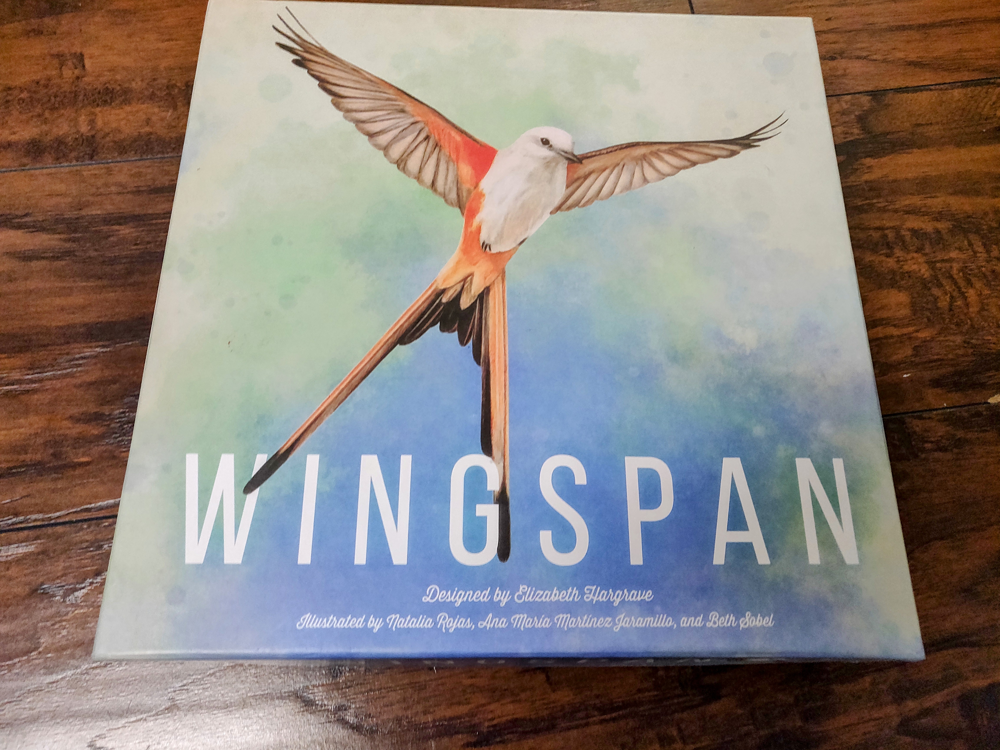
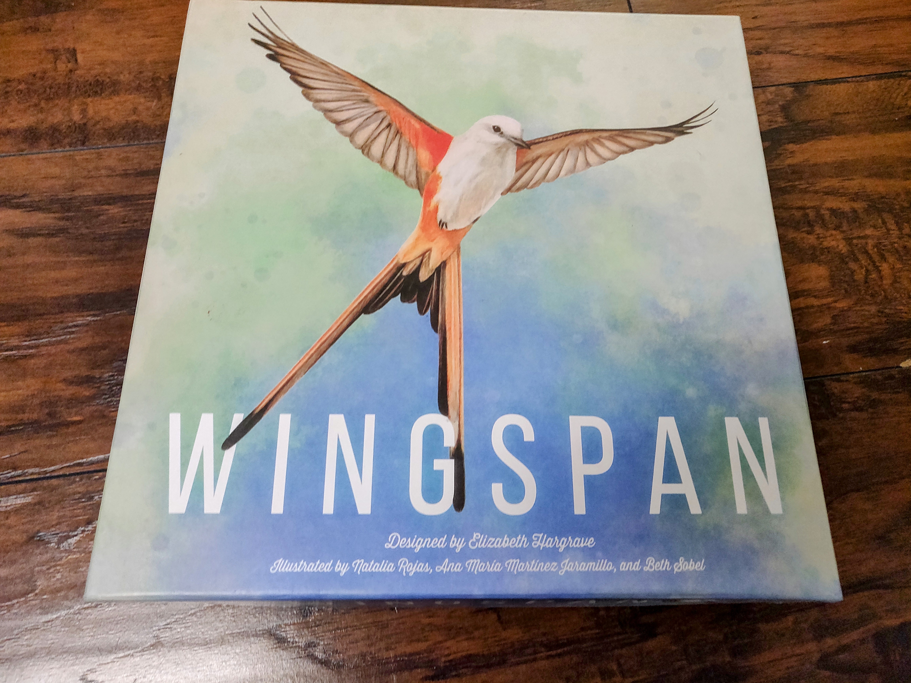
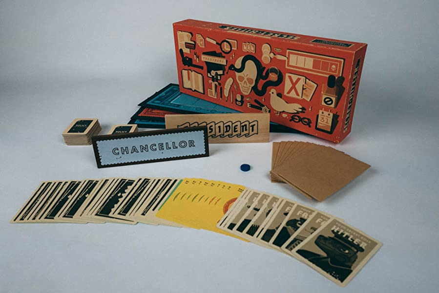
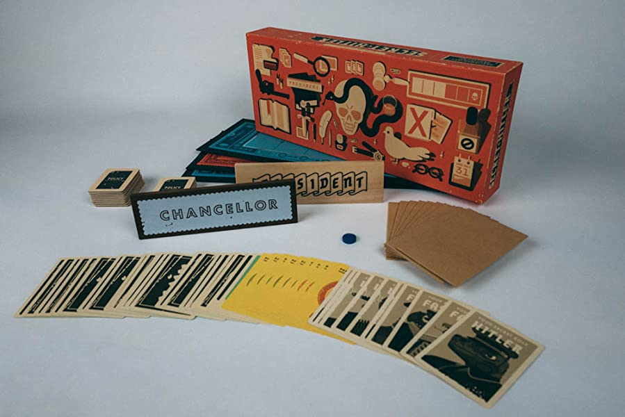

Hey there! My name is Oscar Leung and one of my favorite hobbies is bored games. Oops I meant to spell board games! I love many types of board games ranging from family friendly to competitively ladder. When it comes to core mechanics, I like deception
board games such as Secret Hitler or Avalon. As well as peace board-building or engine-building such as Betrayal House on the Hill or Wingspan. One of my all time favorites is Settlers of Catan. Board games is a way for me to cultivate relationship
with others as it is one medium I am able to express myself.
Board games is meant to be played to have fun or that's at least the objective I often go for. When it comes board games, there's a whole different variety to choose from ranging from complexity and difficulty. My personal recommendation in getting to
board games, is not neccessary what kind of board game, but mainly who you are playing it with. A couple of tips to make playing board games enjoyable is through picking the right ambient music and having a suitable playing environment. A
place with lots of open space or open table would be ideal.
If you're stuck in choosing a board game to play, I recommend using
Board Game Geek as source. Or asking around in your circle group. Of course there are bad design or terrible balancing, but that shouldn't deter one from playing. You can also modifier the game by using
“house rule”, which should ultimate decide how the game should be played out. There's many YouTubers out there that do board game reviews, which can help you decided water or not to purchase the game for yourself.
 

 
